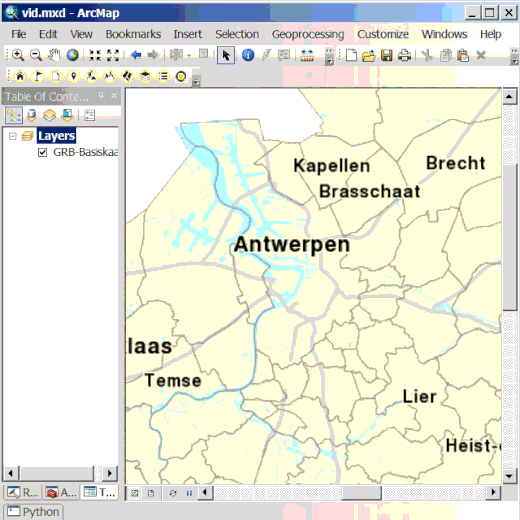

Met de deze tool kan je de data in het metadatacenter van Geopunt raadplegen. Je kunt zoeken op keyword met de toolbalk bovenaan. Je kunt ook filteren op GDI-thema, organisatie die eigenaar de data heeft aangemaakt, de catalogus waaruit de data afkomstig is en het type in de catalogus.
De gevonden fiches verschijnen in het linkse venster. Je kunt met de dropdown rechts onder venster instellen of je enkele resultaten met een WMS, WFS of download wilt tonen en niet de fiches die enkel een beschrijving van data bevatten. Als je een fiche aanklikt in linker venster, kan je in het rechtse venster de beschrijving ervan lezen, er is ook een link om de fiche te openen in het metadatacenter.
Indien een fiche een bijhorende WMS, WFS of download link heeft, kan je die via de knoppen links onderaan de service inladen of de webpagina openen van de downloadlink openen.
Let op de typen "Dataset", "Datasetserie" en "Service" van de fiches kunnen een bijhorende service hebben, niet alleen de Service.
